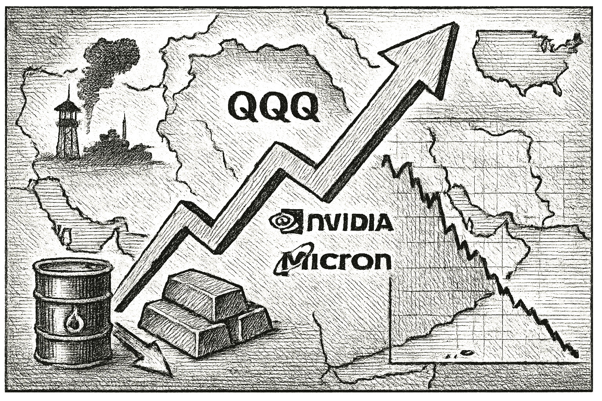

SPY
Current: $761.20Change: +3.37 (+0.44%)
Updated:
Source: yahoo_chartFreshness: fresh


Investors react to rising tensions in the Middle East as tech stocks gain traction, while oil prices continue to fall.

Today's Headline: Tech Stocks Rally Amid Geopolitical Tensions and Oil Price Declines
Setup: Investors react to rising tensions in the Middle East as tech stocks gain traction, while oil prices continue to fall.
Primary Topic: Tech Stocks and Geopolitical Tensions
Specific Development: Tech stocks, particularly the QQQ, are experiencing gains as geopolitical tensions escalate, particularly in the Middle East, while oil prices are declining.
Why Today Is Different: The market is reacting to a combination of geopolitical developments and a significant drop in oil prices, which could shift investor sentiment towards tech stocks.
Secondary Topics: Oil Prices; Geopolitical Developments
Tone: cautiously optimistic
Sectors: Technology; Energy
Companies: Nvidia; Micron
Commodities: Oil; Gold
Countries Or Regions: Middle East; United States
Macro Themes: Geopolitical Risk; Market Volatility
Why This Story: The interplay between geopolitical tensions and market movements, particularly in tech, is crucial for understanding current investment strategies.
Why This Matters: Zacks Earnings Trends Highlights: Micron and Nvidia is the clearest current evidence-led frame for Joshua's observation-only review; missing facts remain explicit intelligence gaps.

Summary: Global markets are reacting to rising tensions in the Middle East, with tech stocks showing resilience while oil prices decline.
What Happened Overnight: Tech stocks gained, particularly in the US, while oil prices fell sharply.
What Changed Materially: The decline in oil prices is significant, impacting energy stocks and overall market sentiment.
Which Assets Sectors Are Affected: Tech stocks; Energy sector
Does It Look Like Noise Or A Real Regime Input: This appears to be a real regime input given the geopolitical context.
Why This Matters: Joshua can use verified cross-asset moves and deterministic risk context while keeping causation explicitly unresolved.

FDX Earnings Expectations — 2026-09-16, Time Unavailable
Consensus EPS: $4.05
Year-ago EPS: unavailable
Expected EPS growth: unavailable
Consensus revenue: $22.6B
Year-ago revenue: unavailable
Expected revenue growth: unavailable
Source: finnhub_earnings_calendar · As of: 2026-09-17T14:15:33.518954+00:00 · Freshness: current

- WOPR learning pipeline: Learning present — untrusted
- Candidates evaluated 24h: 0
- Current gate: Learning trust
- Notification ledger events in 24h: 6
- Pending orders created/canceled/filled/expired: 1/0/0/0
- Pending lifecycle interpretation: Pending-order cancellations have trackable reasons and no obvious rapid churn pattern.
- Portfolio risk: Label: High / Score: 100.0
- Latest intelligence gap report: intelligence_gap_report_2026-09-13.pdf
Why This Matters: The active gate is Learning trust, so the key question is why candidates are stopping before approval, not how to force trades.

- Sentinel role: infrastructure and operational status only.
- State: OFFLINE
- Last successful validation: 2026-09-16T23:33:43.076262+00:00
- Payloads accepted/rejected: 19773/0
- Node health score: 96
Why This Matters: Sentinel is OFFLINE, so Joshua should use its context only to the extent the latest accepted pulse is fresh and authenticated.

CANDIDATES MOVING THROUGH JOSHUA'S INVESTMENT-REVIEW WORKFLOW
FROZEN DAILY BRIEF SNAPSHOT | 2026-09-17T14:12:04.435995+00:00
QUEUE SUMMARY | Investment Ready: 0 | Waiting for Price: 0 | Waiting for Evidence: 2 | Research Underway: 2 | Governance Hold: 3 | Monitor Only: 0
Investment-ready status: No candidates are currently Investment Ready.
#5 AVGO - Research Underway [Moved Up 9->5]
Joshua's Thesis: Positive thesis not yet established.
Why Waiting: Research evidence is still being gathered.
Price: 349.08 now; 370.11 preferred entry
What Unlocks It: Clear valuation support; Evidence that the business quality matches the risk being taken; Independent evidence streams pointing the same way
Portfolio Fit: 19.1/100 — VERY LOW ↑
Portfolio Fit Drivers: projected Technology exposure 56.8%; projected AI infrastructure exposure 56.8%; candidate amount $100 vs $76 currently allocated
Candidate Risk: 72.9/100 — HIGH ↓
Risk Drivers: projected Technology exposure 56.8%; projected AI infrastructure exposure 56.8%; candidate amount $100 vs $76 currently allocated
Next: Fill before expires_at while entry conditions remain valid. Owner: Columbo.
#6 NVDA - Waiting for Evidence [Moved Up 8->6]
Joshua's Thesis: Positive thesis not yet established.
Why Waiting: Positioning gate failed.
Price: 219.53 now; 219.17 preferred entry
What Unlocks It: Clear valuation support; Evidence that the business quality matches the risk being taken; Independent evidence streams pointing the same way
Portfolio Fit: 19.1/100 — VERY LOW ↑
Portfolio Fit Drivers: projected Technology exposure 56.8%; projected AI infrastructure exposure 56.8%; candidate amount $100 vs $76 currently allocated
Candidate Risk: 72.9/100 — HIGH ↓
Risk Drivers: projected Technology exposure 56.8%; projected AI infrastructure exposure 56.8%; candidate amount $100 vs $76 currently allocated
Next: Positioning status must no longer be warning. Owner: Joshua.
#12 QBTS - Waiting for Evidence
Joshua's Thesis: Positive thesis not yet established.
Why Waiting: Waiting for the preferred entry price.
Price: 17.22 now; 20.10 preferred entry
What Unlocks It: Clear valuation support; Evidence that the business quality matches the risk being taken; Independent evidence streams pointing the same way
Portfolio Fit: 0.0/100 — VERY LOW
Portfolio Fit Drivers: projected Unclassified exposure 85.8%; projected Unclassified exposure 85.8%; candidate amount $100 vs $76 currently allocated
Candidate Risk: 100.0/100 — VERY HIGH
Risk Drivers: projected Unclassified exposure 85.8%; projected Unclassified exposure 85.8%; candidate amount $100 vs $76 currently allocated
Next: Fill before expires_at while entry conditions remain valid. Owner: Joshua.
#15 PLTR - Governance Hold [Moved Up 18->15]
Joshua's Thesis: Positive thesis not yet established.
Why Waiting: Governance gate has not cleared.
Price: 175.79 now; 175.33 preferred entry
What Unlocks It: Governance gate clears; Clear valuation support; Evidence that the business quality matches the risk being taken
Portfolio Fit: 19.1/100 — VERY LOW ↑
Portfolio Fit Drivers: projected Technology exposure 56.8%; projected AI software exposure 56.8%; candidate amount $100 vs $76 currently allocated
Candidate Risk: 72.9/100 — HIGH ↓
Risk Drivers: projected Technology exposure 56.8%; projected AI software exposure 56.8%; candidate amount $100 vs $76 currently allocated
Next: Re-evaluate after the recorded gate clears. Owner: Columbo.
#20 DIA - Research Underway [NEW]
Joshua's Thesis: Positive thesis not yet established.
Why Waiting: Research evidence is still being gathered.
Price: Current price unavailable.; Preferred entry not established.
What Unlocks It: Clear valuation support; Evidence that the business quality matches the risk being taken; Independent evidence streams pointing the same way
Portfolio Fit: 19.1/100 — VERY LOW
Portfolio Fit Drivers: projected ETF exposure 56.8%; projected Broad market exposure 56.8%; candidate amount $100 vs $76 currently allocated
Candidate Risk: 72.9/100 — HIGH
Risk Drivers: projected ETF exposure 56.8%; projected Broad market exposure 56.8%; candidate amount $100 vs $76 currently allocated
Next: Clear valuation support; Evidence that the business quality matches the risk being taken; Independent evidence streams pointing the same way. Owner: Columbo.
#21 ANGX - Governance Hold
Joshua's Thesis: Positive thesis not yet established.
Why Waiting: Governance gate has not cleared.
Price: 5.04 now; 4.84 preferred entry
What Unlocks It: Governance gate clears; Clear valuation support; Evidence that the business quality matches the risk being taken
Portfolio Fit: 0.0/100 — VERY LOW
Portfolio Fit Drivers: projected Unclassified exposure 85.8%; projected Unclassified exposure 85.8%; candidate amount $100 vs $76 currently allocated
Candidate Risk: 100.0/100 — VERY HIGH
Risk Drivers: projected Unclassified exposure 85.8%; projected Unclassified exposure 85.8%; candidate amount $100 vs $76 currently allocated
Next: Re-evaluate after the recorded gate clears. Owner: Advisory Committee.
#22 SPCX - Governance Hold
Joshua's Thesis: Positive thesis not yet established.
Why Waiting: Governance gate has not cleared.
Price: 156.34 now; 146.52 preferred entry
What Unlocks It: Governance gate clears; Clear valuation support; Evidence that the business quality matches the risk being taken
Portfolio Fit: 0.0/100 — VERY LOW
Portfolio Fit Drivers: projected Unclassified exposure 85.8%; projected Unclassified exposure 85.8%; candidate amount $100 vs $76 currently allocated
Candidate Risk: 100.0/100 — VERY HIGH
Risk Drivers: projected Unclassified exposure 85.8%; projected Unclassified exposure 85.8%; candidate amount $100 vs $76 currently allocated
Next: Re-evaluate after the recorded gate clears. Owner: Advisory Committee.
Since the prior Chronicle: XRAY - Removed
Observation only. This section creates no recommendation, order, authority, or execution instruction.

- If AVGO reaches the recorded price condition <= 370.11, which recorded evidence and governance requirements would still remain?
- If NVDA reaches the recorded price condition <= 219.17, which recorded evidence and governance requirements would still remain?
- If QBTS reaches the recorded price condition <= 20.1, which recorded evidence and governance requirements would still remain?
- Which recorded governance requirement must clear before PLTR can advance?
- What FDX EPS or revenue result would materially change the current recorded thesis?

The current market dynamics reflect a complex interplay between geopolitical tensions and sector performance, particularly in tech. The decline in oil prices may provide relief to consumers but could also signal broader economic concerns. Investors should remain vigilant as these factors evolve.

Compared to: 2026-09-16
- Market weather: High -> Elevated
- Top opportunity: Still DELL
- Joshua gate: Still Learning trust
- 2Y Treasury.last_price: 4.67 -> 4.74 (up); 2Y Treasury.last_price changed 1.50% versus the prior frozen Chronicle snapshot.
- 2Y Treasury.percent_change: 0.4301075268817112 -> 1.498929336188443 (up); 2Y Treasury.percent_change changed 248.50% versus the prior frozen Chronicle snapshot.
- 10Y Treasury.last_price: 5.0 -> 5.01 (up); 10Y Treasury.last_price changed 0.20% versus the prior frozen Chronicle snapshot.
- 10Y Treasury.percent_change: 0.6036217303822987 -> 0.19999999999999576 (down); 10Y Treasury.percent_change changed 66.87% versus the prior frozen Chronicle snapshot.
- 30Y Treasury.last_price: 5.36 -> 5.35 (down); 30Y Treasury.last_price changed 0.19% versus the prior frozen Chronicle snapshot.
- 30Y Treasury.percent_change: 0.3745318352060012 -> -0.18656716417911706 (down); 30Y Treasury.percent_change changed 149.81% versus the prior frozen Chronicle snapshot.
- SPY.last_price: 759.56 -> 761.2 (up); SPY.last_price changed 0.22% versus the prior frozen Chronicle snapshot.
- SPY.percent_change: -0.37250786988457923 -> 0.44469076178034705 (up); SPY.percent_change changed 219.38% versus the prior frozen Chronicle snapshot.
- QQQ.last_price: 709.46 -> 715.88 (up); QQQ.last_price changed 0.90% versus the prior frozen Chronicle snapshot.
- QQQ.percent_change: -0.9562898744956666 -> 1.0145479687874726 (up); QQQ.percent_change changed 206.09% versus the prior frozen Chronicle snapshot.
- IWM.last_price: 286.19 -> 287.07 (up); IWM.last_price changed 0.31% versus the prior frozen Chronicle snapshot.
- IWM.percent_change: -1.5311037709881603 -> -0.21897810218977942 (up); IWM.percent_change changed 85.70% versus the prior frozen Chronicle snapshot.

The combination of declining oil prices and rising tech stocks suggests a potential shift in market dynamics that warrants attention.
No new warnings; however, the geopolitical situation remains fluid and could impact market stability.
Portfolio Construction Review
Current allocation: 76.13 allocated.
Largest sector: Unclassified at 67.2%.
Largest theme: Unclassified at 67.2%.
Diversification: Concentrated (32.8).
Cash allocation: 92.4% unallocated.
Recommended exposure: DELL at portfolio-fit score 19.3.
Portfolio fit: DELL has strong standalone evidence, but it increases portfolio concentration.
Why This Matters: Portfolio Manager evaluates whether an opportunity improves this portfolio; it does not select the investment, vote, or authorize execution.

Focus on the implications of geopolitical developments on market sentiment and sector performance today.

| Can trigger trade | no |
| Can modify trade rules | no |
| Can add watch items | yes |
| Can add review questions | yes |
| Can adjust confidence notes | yes |
| Input policy | external_intelligence_plus_sanitized_internal_observations |
| External policy | The Editor-in-Chief synthesizes current world/market context where available and labels unknowns; provider/model provenance remains separate. |
| Internal policy | Joshua/WOPR/Sentinel facts are supplied as sanitized observation-only summaries. |
| Editorial model | gpt-4o-mini |
- Selected by a deterministic daily rotation through symbols already present in the persisted Chronicle snapshot.
- Related event on the canonical wire: Enbridge: High Leverage, Rising Rates, And More Venezuelan Oil - A Toxic Mix
- Trump Compares AI Data Centers To Oil Boom — Nvidia CEO Agrees
- Desk: commodity; source: Yahoo; linked symbols: NVDA.
- Published: 9/16/26 20:30 MST.
- High-impact watch: Advance Report on Durable Goods--Manufacturers' Shipments, Inventories, and Orders - 9/25/26 05:30 MST.
- Affected assets: US equities, Treasuries, USD; source: census_release_schedule.
- FDX earnings: September 16, 2026, time unknown.
- MU earnings: September 30, 2026, after close.
- Technology: 1.45% session performance; source: persisted sector ledger.
- Health Care: 1.43% session performance; source: persisted sector ledger.
- Communication Services: 0.91% session performance; source: persisted sector ledger.
- 2Y TREASURY: 1.50% recorded move; price: 4.74.
- Session: regular; catalyst status: no_verified_catalyst; source: treasury_official_yield_curve.
- Geopolitical Developments in the Middle East; why it matters: Continued tensions could exacerbate oil supply issues.
- State: broad_weakness; score: 11.70/100; advance/decline ratio: 0.43.
- Above 50-day average: 28.60%; sample: 119; provider: sentinel_sampled_breadth.
- Decision outcomes evaluated: 16; currently untestable: 0.
- Warning review: unknown 3; confidence calibration: insufficient_sample.
- Current macro regime: defensive_rotation; change probability: unavailable.
- Risk dashboard: cautious (67/100); breadth: broad_weakness; sentiment: neutral.
- Scenario board only - a current-state observation, not a forecast or execution instruction.

- Built a distinguished multi-decade macro-investing record at Duquesne and the Quantum Fund.
- Published quotation: "The best economist I know is the inside of the stock market."
- Published framework: Identify consequential macro shifts and liquidity trends, use price action to test the thesis, concentrate when the risk-reward is exceptional, and reduce exposure quickly when the facts change.
- Committee lens: Druckenmiller adds macro regime, liquidity, and asymmetry: Joshua must ask whether the backdrop supports the trade and whether conviction is proportionate to the opportunity.
- Public philosophy profile only; no participation, endorsement, or current recommendation is implied.
- If NVDA reaches the recorded price condition <= 219.17, which recorded evidence and governance requirements would still remain?
- DELL: No canonical symbol-specific material event is linked.
- Attach the missing DELL evidence before the next committee review.
- Define evidence that would confirm or retire each unresolved warning before the next review window.
- If AVGO reaches the recorded price condition <= 370.11, which recorded evidence and governance requirements would still remain?
- If NVDA reaches the recorded price condition <= 219.17, which recorded evidence and governance requirements would still remain?
- If QBTS reaches the recorded price condition <= 20.1, which recorded evidence and governance requirements would still remain?
- Which recorded governance requirement must clear before PLTR can advance?
- Evidence agenda: DELL - No canonical symbol-specific material event is linked.
- Proposed review: Brent Crude Prices; why it matters: A sustained rise could lead to inflationary pressures.
- Proposed review: Market Sentiment; why it matters: Shifts in sentiment could lead to broader market volatility.
- Canonical instruments reviewed: 24; delayed 6, fresh 18.
- Leading sources: yahoo_chart (21), treasury_official_yield_curve (3).
- Snapshot recorded: 9/17/26 07:15 MST.
Tech Stocks Rally Amid Geopolitical Tensions and Oil Price Declines
Storm meter: Cautious
#5 AVGO - Research Underway [Moved Up 9->5]
Observation mode: observation_only
Watch: Brent Crude Prices; why it matters: A sustained rise could lead to inflationary pressures.
Question: If AVGO reaches the recorded price condition <= 370.11, which recorded evidence and governance requirements would still remain?